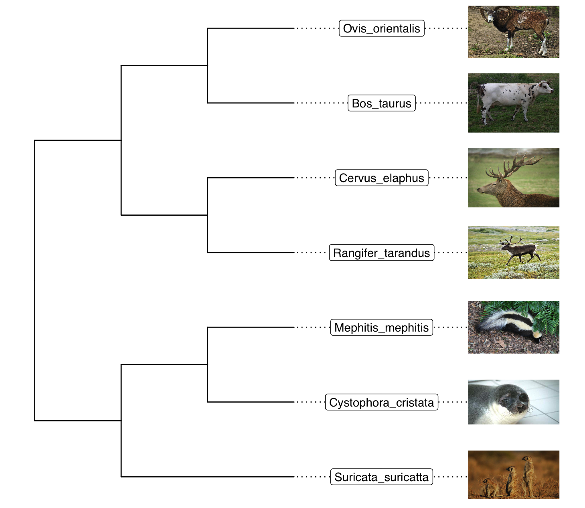
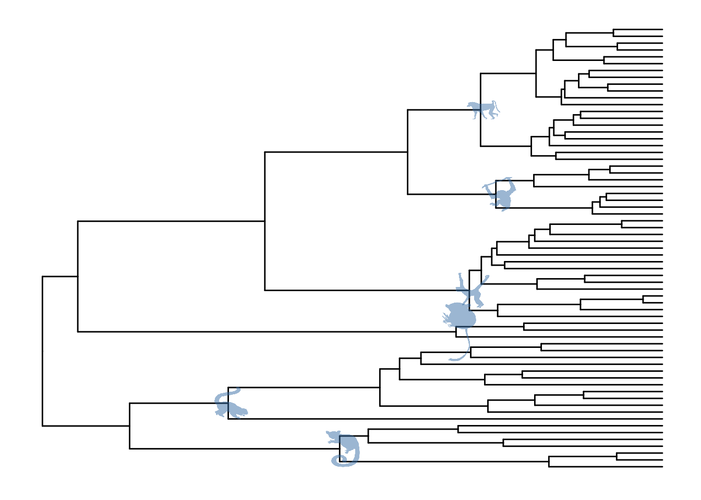
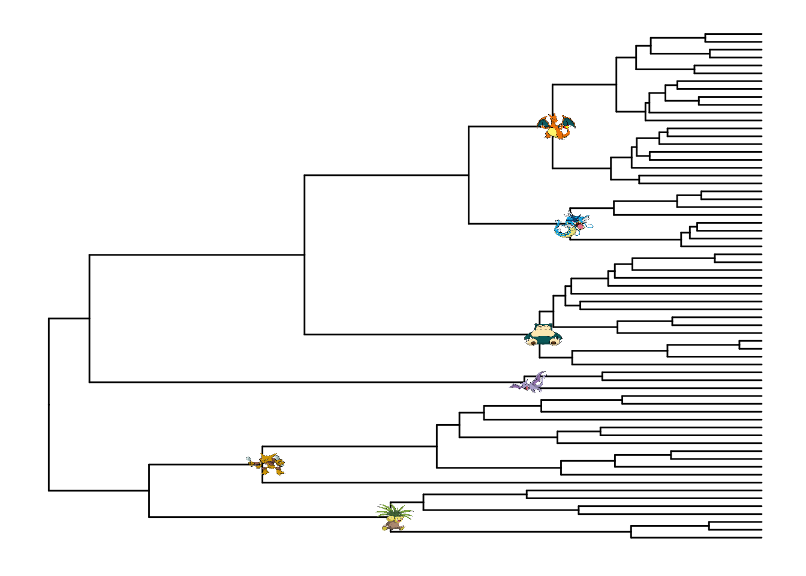
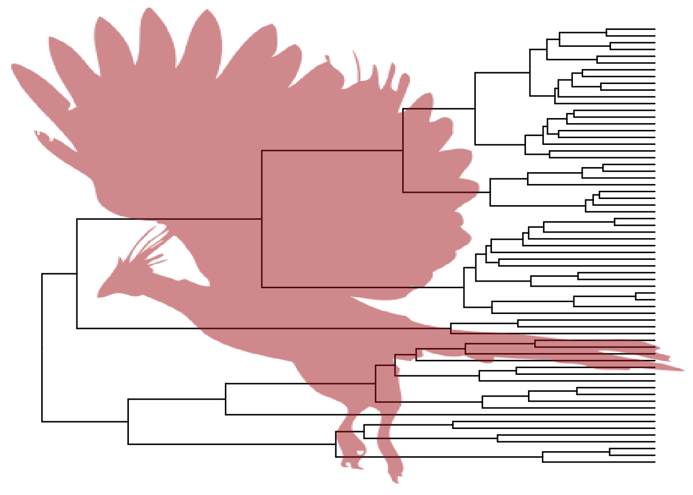

Chapter 5 Annotating phylogenetic tree with images
5.1 Annotate tips
library(ggimage)
library(ggtree)
url <- paste0("https://raw.githubusercontent.com/TreeViz/",
"metastyle/master/design/viz_targets_exercise/")
x <- read.tree(paste0(url, "tree_boots.nwk"))
info <- read.csv(paste0(url, "tip_data.csv"))
p <- ggtree(x) %<+% info + xlim(NA, 6)
p + geom_tiplab(aes(image= imageURL), geom="image", offset=2, align=T, size=.16, hjust=0) +
geom_tiplab(geom="label", offset=1, hjust=.5)
5.2 Annotate internal nodes
## example from https://rgriff23.github.io/2017/05/11/primate-phylogeny-ggtree.html
library(ape)
tree <- read.nexus("https://raw.githubusercontent.com/rgriff23/Dissertation/master/Chapter_2/data/tree.nex")
phylopic_info <- data.frame(node = c(124, 113, 110, 96, 89, 70),
phylopic = c("7fb9bea8-e758-4986-afb2-95a2c3bf983d",
"bac25f49-97a4-4aec-beb6-f542158ebd23",
"f598fb39-facf-43ea-a576-1861304b2fe4",
"aceb287d-84cf-46f1-868c-4797c4ac54a8",
"0174801d-15a6-4668-bfe0-4c421fbe51e8",
"72f2f854-f3cd-4666-887c-35d5c256ab0f"),
species = c("galagoids", "lemurs", "tarsiers",
"cebids", "hominoids", "cercopithecoids"))
pg <- ggtree(tree)
pg %<+% phylopic_info + geom_nodelab(aes(image=phylopic), geom="phylopic", alpha=.5, color='steelblue')
d <- data.frame(node = c("70","89","96","110","113","124"),
images = c("https://i.imgur.com/8VA9cYw.png",
"https://i.imgur.com/XYM1T2x.png",
"https://i.imgur.com/EQs5ZZe.png",
"https://i.imgur.com/2xin0UK.png",
"https://i.imgur.com/hbftayl.png",
"https://i.imgur.com/3wDHW8n.png"))
pg %<+% d + geom_nodelab(aes(image=images), geom="image") 
5.3 Use image as background
pg + geom_phylopic(image="79ad5f09-cf21-4c89-8e7d-0c82a00ce728", size=Inf, alpha=.5, color='firebrick')